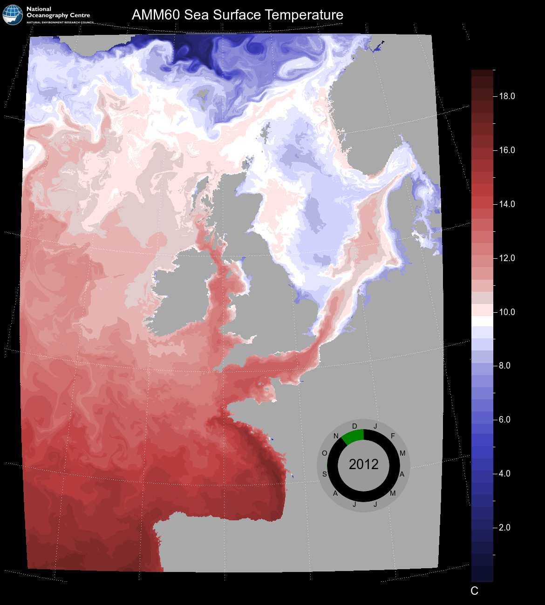

The last example in the previous section provides a useful starting point for demonstrating the use of nemosim in scripts to generate animation frames. The example data used in the previous section, and included in the software release, was originally part of a 60 day sequence of daily means held in a single file. The steps required to produce an animated sequence from such a file can be summarised in the following menu:
- Produce a sample frame with content tuned as required AND save the mapping matrix using the -usemap option
- Script a loop command that produces successive numbered frames from each time level. Re-use of the mapping matrix within this loop ensures both consistency between the frames and speed of production.
- Encode the frames into a single movie file.
For a high quality video it is best to start with a slightly larger image than the previous example. Here is a suitable sample frame which repeats the example from the previous section with tweaked sizes and positions:
nemosim -f ./data/AMM60_1d_20121018_20121216_grid_T.nc -d sst -o amm60.png -nomask \
-r 1000 1200 -ortho -eu1 356. -eu2 53. -eu3 -1. -gsize 30 \
-vmask 100. 0.0 -stfs 24 -sfs 18 -margins 10 160 50 50 -grid 5 5 \
-limits 0.0 19.0 -spos 2 -bbg black -bfg white -cs blue2red_b.pal \
-title "AMM60 Sea Surface Temperature" -stitle C -stjus 7 -stpos 1010 1250 \
-logo ./data/NOC_logo_white.png -lsize 198 100 -lpos 5 10 \
-usemap amm60_ortho.nc
Note the addition of the -usemap option and the change in data source to the original, multi-time-level file. No particular time-level is requested here so the default choice of the first time-level will be extracted. This isn’t important here since the frame isn’t actually going to be used; the purpose of this step is only to generate the mapping matrix.
Before proceeding to frame production, it is useful to consider how best to indicate the passage of time in any resulting animation. Oceanic features will form and propagate to provide a sense of movement but without a clear time indicator there is no reference for the actual time scale involved. All NEMO output will include the time_counter variable which timestamps each time-level with the number of seconds since a reference date. In the case of the AMM60 data the units are:
time_counter:units = "seconds since 1950-01-01 00:00:00" ;
For display purposes, a calendar date provides a better visual aid to the passage of time since most frames are produced at intervals of at least one model day. Converting time_counter values to calendar dates is a task beyond the scope of this cookbook but assuming you have access to a utility such as nocstfinder shown here:
nocstfinder -f ./data/AMM60_1d_20121018_20121216_grid_T.nc -e 0 -l -r
18102012 19102012 20102012 21102012 22102012 23102012 24102012
25102012 26102012 27102012 28102012 29102012 30102012 31102012
01112012 02112012 03112012 04112012 05112012 06112012 07112012
08112012 09112012 10112012 11112012 12112012 13112012 14112012
15112012 16112012 17112012 18112012 19112012 20112012 21112012
22112012 23112012 24112012 25112012 26112012 27112012 28112012
29112012 30112012 01122012 02122012 03122012 04122012 05122012
06122012 07122012 08122012 09122012 10122012 11122012 12122012
13122012 14122012 15122012 16122012
then obtaining a list of dates associated with the data should be possible. For reference, the arguments shown here to the command: request the end of each averaging period (-e 0); specify a gregorian leap-year calendar (-l) and request dates as DDMMYYY in reverse to the normal NEMO presentation of YYYYMMDD (-r).
The date format requested here is precisely that required for the -dateclk option to nemosim which can be used to size, position and annotate a date clock representation of the date on the output image. The date clock is a circular element with calendar months marked around the circumference, the year written in the centre and a circular black bar indicating current progress through the year.
We now have all the elements required to produce the complete frame sequence. With some simple scripting techniques a series of numbered frames can easily be produced. Here is a bash script example that combines all the elements so far discussed:
#!/bin/bash
nemosim -f ./data/AMM60_1d_20121018_20121216_grid_T.nc -d sst -o amm60.png -nomask \
-r 1000 1200 -ortho -eu1 356. -eu2 53. -eu3 -1. -gsize 30 \
-vmask 100. 0.0 -stfs 24 -sfs 18 -margins 10 160 50 50 -grid 5 5 \
-limits 0.0 19.0 -spos 2 -bbg black -bfg white -cs blue2red_b.pal \
-title "AMM60 Sea Surface Temperature" -stitle C -stjus 7 -stpos 1010 1250 \
-logo ./data/NOC_logo_white.png -lsize 198 100 -lpos 5 10 \
-usemap amm60_ortho.nc
dates=( `nocstfinder -f ./data/AMM60_1d_20121018_20121216_grid_T.nc -e 0 -l -r` )
for n in `seq 0 1 59`
do
nn=`printf '%4.4d' $n`
nt=$(( $n + 1 ))
fout=amm60_sst_$nn.png
./nemosim -as amm60_ortho.nc -o $fout -t $nt -dateclk 100 780 1000 ${dates[$n]}
done
Just a couple of subtleties worth noting here:
- Frame numbers are produced as a zero padded 4-digit string. This ensures they are both numerically and alphabetically ordered since some encoding software packages may rely on unix file ordering when ingesting frames.
- The elements of the bash array dates are 0-indexed whereas the index supplied to the -t option of nemosim refers to the first time-level as index 1. Hence the need to have nt leading n by 1.
Here is an example frame from the sequence (click on the image to view the full-size frame):
There are many ways to turn a numbered sequence of images into an encoded video and many of these methods will produce poor quality results unless some control is exercised over default settings. Chiefly this is because most techniques are meant for encoding video streams of real-world images where natural features are not unduly altered by slight blurring or fuzziness. When crisper edges are required and parts of the image remain static then it is often necessary to increase quality demands and except the larger files that result.
The ffmpeg utility provides one of the simplest methods and is readily available:
ffmpeg -i amm60_sst_%04d.png -vcodec mpeg4 -vb 20M amm60SST.mp4
Here the quality is controlled by the -vb option (video bitrate). Try leaving this option out and compare the results.
{kind=link}